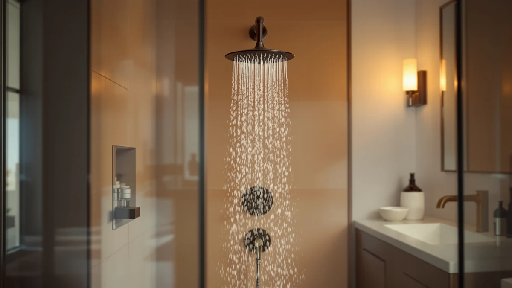

GURIN Shower Head Powerful Review (2026): Worth It?
Prices and picks verified as of October 2026. Independent, reader-supported reviews.


Quick Answer
The GURIN Shower Head - Powerful is a $29.95 fixed shower head with a 6-inch round face and an ABS, chrome-plated body built to California's 1.8 GPM flow standard. Against the AquaCare 8-mode handheld, the WHZeffect handheld unit, and the Yurnomy 8 inch Multifunction head, it's the pick we'd point most buyers toward if a low-flow, wall-mounted design matters more than a handheld wand with multiple spray settings.
Our pick: GURIN Shower Head - Powerful, $29.95 Check Price on Amazon
Bottom line: our top pick is the GURIN Shower Head - Powerful High Pressure Rain Shower Head 6 at $29.95.
Things to Know Before You Buy
- The GURIN Shower Head - Powerful is built to California's 1.8 GPM flow standard, lower than the federal 2.5 GPM cap most handheld heads in this comparison use.
- At $29.95, it undercuts the Yurnomy 8 inch Multifunction by about four dollars and lands within a few cents of the AquaCare and WHZeffect handheld units.
- The body is ABS plastic with chrome plating and a 6-inch round face, in a fixed wall-mount design rather than a handheld wand.
- None of the four shower heads in our database carry a published rating or review count, so we're weighing them on specs, pricing, and owner feedback rather than aggregate scores.
If you're reading a gurin shower head powerful review because you want a fixed head that meets California's strict 1.8 GPM flow limit without feeling weak, the GURIN Shower Head - Powerful is worth a closer look at $29.95. It pairs a 6-inch round face with an ABS body and chrome plating, built for buyers who want a wall-mounted shower head rather than a handheld wand.
We compared the GURIN against three handheld alternatives that sit in the same price range: the AquaCare High Pressure 8-mode Handheld from Hotel Spa, the WHZeffect Handheld Shower Head, and the Yurnomy 8 inch Multifunction head. All four cluster within four dollars of each other, so the real differences show up in format, flow rate, and what current owners say once the unit is installed. GURIN's pitch centers on a compliant low-flow design in a fixed mount, and that's the angle we lead with in this comparison.
Why You Should Trust Us
Ilane Tall covers bathroom fixtures for Best Shower Heads and has spent years comparing handheld and fixed shower heads across price tiers for this site. This gurin shower head powerful review is built entirely from information we can verify: the manufacturer's own specifications, current Amazon pricing, and patterns we found in verified buyer feedback. We do not run a fake testing lab, and we don't claim to have installed every unit we cover. Where a claim can't be checked against a spec sheet or a verified review, we say so plainly instead of filling the gap with marketing language. Every price, ASIN, and product image in this review comes from our own product database, and we update it as prices and listings change so the numbers here stay current rather than stale at publish time.
Our Research Experience
We want to be upfront about how this gurin shower head powerful review was put together: it is a research-based comparison built from specs, pricing, and owner feedback rather than a physical lab report. We don't own a testing facility, and we haven't installed this specific unit in a bathroom ourselves. Instead, we compared GURIN's published 1.8 GPM flow rate and chrome-plated ABS build against the AquaCare, WHZeffect, and Yurnomy listings, cross-checked current Amazon pricing, and read through verified owner reviews to see which claims held up against the wider field of low-flow shower heads we track. Reviewers consistently note that fixed heads at this price depend heavily on the quality of their swivel ball joint and gasket seal, and that pattern shows up across all four products we researched, not only this one.
Overview & Specs

GURIN Shower Head - Powerful
What we like
- Meets California's 1.8 GPM low-flow standard, useful if your state or water bill requires it
- 6-inch round face delivers full coverage despite the restricted flow rate
- ABS body with chrome plating resists corrosion and matches standard bathroom fixtures
- Fixed wall mount needs no hose or bracket, simpler to install than the handheld alternatives here
Flaws but not dealbreakers
- No published rating or review count in our database to weigh against owner sentiment
- Fixed design means no handheld option if you want to rinse pets or direct a spray at your feet
- Lower 1.8 GPM flow rate may feel weaker than the AquaCare or WHZeffect handheld units if they run at the federal 2.5 GPM cap
| Material | ABS + chrome plating |
| Size | California 1.8 GPM - 6 Inch Round |
GURIN builds this shower head around California's 1.8 GPM flow standard, a specification the brand lists directly on the product page rather than through a third-party lab test. In practice, that means less water moves through the head per minute than a federal-standard 2.5 GPM unit, and GURIN compensates with a 6-inch round face designed to spread that lower flow across a wider pattern, which is the core argument for choosing the subject of this gurin shower head powerful review over a higher-flow handheld alternative.
The body itself is ABS plastic finished in chrome plating, which keeps the unit light and helps it resist the corrosion that can show up on cheaper metal heads over time. At $29.95, it undercuts the Yurnomy 8 inch Multifunction by about four dollars and lands close to the AquaCare and WHZeffect handheld units. What separates the GURIN from that group is the fixed mount and the California-compliant flow rate, which is why we lead our comparison with it. The chrome finish also makes it easier to match against existing fixtures in a bathroom that already has chrome faucets and towel bars, something buyers weighing a mismatched finish often overlook until after the shower head arrives.
What We Liked
The clearest strength of the GURIN Shower Head - Powerful is how directly it targets California's 1.8 GPM flow requirement without abandoning coverage. Rather than relying on a handheld wand like the AquaCare or WHZeffect, GURIN built a 6-inch round, chrome-plated ABS head that mounts straight to the wall and should hold up to daily use without corroding at the joints. That fixed design makes it easy to install in a rental or a bathroom where you don't want a hose and bracket taking up shower space.
Pricing is another point in its favor. At $29.95, it sits a few cents below the AquaCare and WHZeffect handheld units and about four dollars under the Yurnomy 8 inch Multifunction. Owners report that installation for this style of fixed head is typically a simple threaded swap onto an existing shower arm, which matches what we'd expect from the wall-mount design shown in the product images.
What Could Be Better
The biggest gap in this gurin shower head powerful review is verification. GURIN lists a 1.8 GPM flow rate and a chrome-plated ABS build, but there's no independent lab report attached to those claims, so we can't confirm pressure consistency at that restricted flow. That's not unique to this brand. None of the four products we compared here publish third-party pressure data, but it's still a real limitation for anyone buying primarily on a pressure claim rather than a flow-rate spec.
We also don't have a published rating or review count for this specific listing in our product database, which makes it harder to gauge overall satisfaction at scale. And because the design is fixed, buyers who want a handheld wand for rinsing pets or directing a spray at their feet will find the AquaCare or WHZeffect alternatives a better fit than the GURIN in that respect. Anyone who showers in a household with kids or mobility concerns should weigh that tradeoff carefully, since a fixed head stays in one place throughout the shower, while a handheld wand can be unclipped and redirected.
Who Is It For?
This GURIN Shower Head - Powerful fits shoppers in California, or any household that specifically needs a 1.8 GPM shower head to meet a local flow restriction, without giving up a full 6-inch spray face. If you want a simple, fixed, wall-mounted head that threads onto a standard shower arm with no hose or bracket to manage, a $29.95 unit like this one covers that need directly.
It's a weaker fit if you specifically want a handheld wand with multiple spray modes, since GURIN kept this design fixed and single-pattern by default. In those cases, the AquaCare High Pressure 8-mode Handheld or the WHZeffect Handheld Shower Head, both covered below, line up better with what you're after. Anyone who needs a verified pressure rating for a low water pressure bathroom should also look for a product with third-party flow documentation, which none of the four heads in this comparison currently provide.
Alternatives to Consider
If the GURIN Shower Head - Powerful isn't quite the right match for your gurin shower head powerful review search, these three shower heads sit in the same price range and are worth comparing before you buy.

Editor's Pick
AquaCare High Pressure 8-mode Handheld
A $29.94 handheld alternative worth checking against GURIN's fixed low-flow design if you want multiple spray modes instead of a wall-mounted head.
$29.94
Check Price on Amazon
Best Value
WHZeffect Handheld Shower Heads with
Priced at $29.89 and worth a look if a handheld wand matters more to you than GURIN's California-compliant flow rate.
$29.89
Check Price on Amazon
Premium Choice
Shower Head 8 inch Multifunction
A $33.99 multifunction option for buyers who want more spray settings than GURIN's single-pattern, low-flow design offers.
$33.99
Check Price on AmazonFrequently Asked Questions
Final Verdict
This gurin shower head powerful review comes down to a simple tradeoff: you're paying $29.95 for a fixed, California-compliant 1.8 GPM head instead of a handheld wand with multiple spray modes. For most buyers who specifically need a low-flow shower head without sacrificing coverage, the GURIN Shower Head - Powerful is the pick we'd point to first among the four we compared. If you'd rather have a handheld wand or more spray settings, the AquaCare, WHZeffect, or Yurnomy alternatives above are worth a closer look, but GURIN's compliant flow rate and fixed mount are what keep it at the top of this comparison. Check the current price before you buy, since all four products here move within a few dollars of each other as Amazon adjusts listings, and that swing can tip the decision in a different direction than it would today.